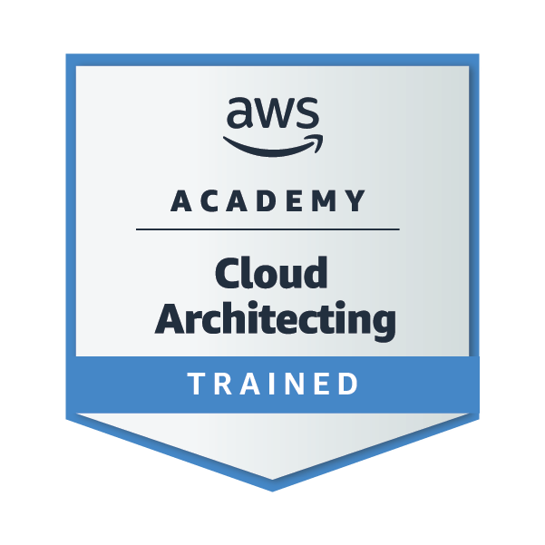
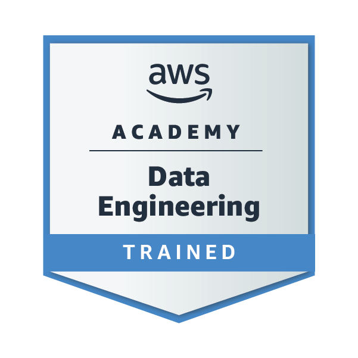

AWS Academy Graduate — Cloud Architecting
Diseño de soluciones en la nube e infraestructura en AWS, con buenas prácticas de arquitectura.
Emitida por Amazon Web Services Training and Certification.
Portafolio académico
¡Hola! Qué gusto que estés aquí. En este portafolio comparto una parte de lo que he aprendido y construido durante la carrera. Puedes empezar por el proyecto que más te llame la atención o recorrer mis habilidades y certificaciones para conocer mejor mi perfil.
Hola, soy Carlos y estudio Ingeniería en Computación en la UEES. Me interesa desarrollar aplicaciones que resuelvan problemas concretos y entender cómo el diseño de los datos influye en su funcionamiento.
He trabajado en equipo en un módulo web para gestionar solicitudes académicas con Laravel y PostgreSQL, y en el diseño de una simulación en Python que coordina solicitudes de impresión concurrentes.
Si tienes una pregunta sobre mis proyectos o una idea de software o datos que quieras desarrollar en equipo, me gustaría conversar contigo.
UEES · Inicio en 2024 · Quinto semestre

Diseño de soluciones en la nube e infraestructura en AWS, con buenas prácticas de arquitectura.
Emitida por Amazon Web Services Training and Certification.

Diseño de flujos de datos en AWS, desde la ingesta y la transformación hasta la protección de los datos.
Emitida por Amazon Web Services Training and Certification.
Explora los proyectos por asignatura y consulta sus repositorios en GitHub.
2026 · Finalizado
Aplicación de escritorio para gestionar miembros, membresías y pagos de una asociación de agricultores. Integra registros y consultas en PostgreSQL, importación desde Excel y reportes de beneficios y contratos.
2026 · Finalizado
Aplicación de escritorio para analizar inversiones en startups mediante un Data Warehouse con esquema estrella. Integra procesos ETL, indicadores de inversión, filtros y reportes exportables a PDF.
2026 · Finalizado
Simulador de consola que organiza el flujo de pasajeros y equipaje de un aeropuerto. Distribuye pasajeros entre mostradores, gestiona filas de check-in y procesa maletas por vuelo mediante estructuras de datos propias.
2026 · Finalizado
Simulador de granja en consola que permite comprar parcelas y animales, sembrar, cosechar y administrar monedas. Aplica herencia, polimorfismo e interfaces, e incorpora el guardado y la carga de partidas en archivos de texto.
2026 · En desarrollo
Diseño de una simulación en Python que coordina solicitudes de varios usuarios y asigna los documentos en orden de llegada a las impresoras disponibles mediante paso de mensajes.
2026 · En desarrollo
Proyecto en equipo para gestionar solicitudes académicas. El módulo permite a asistentes y directores consultar expedientes, registrar decisiones de revisión y gestionar agendas y resoluciones del consejo.
Finalizado · Propuesta académica
Propuesta en equipo para aprovechar la presión de las pisadas y generar energía eléctrica en zonas de alto tránsito. Plantea una baldosa con sensores piezoeléctricos y materiales reciclados, orientada a dispositivos de bajo consumo y al almacenamiento de energía.
Si tienes un proyecto en marcha o quieres conversar sobre algo que viste aquí, cuéntame qué tienes en mente. Podemos intercambiar ideas y ver si hay oportunidad de colaborar.